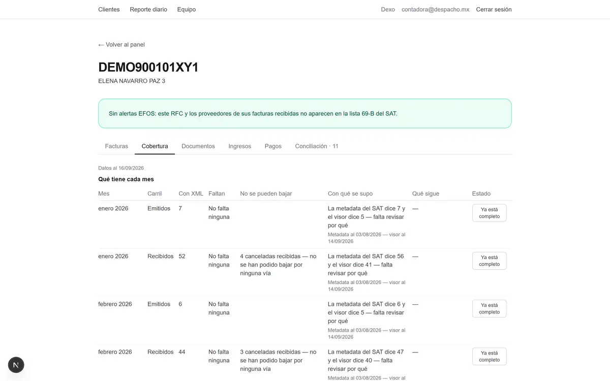
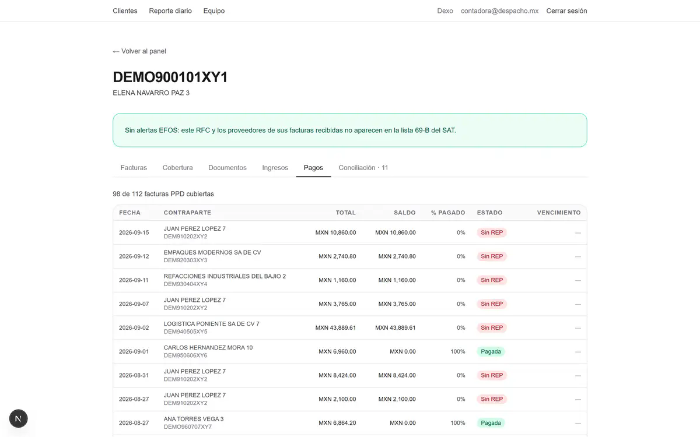
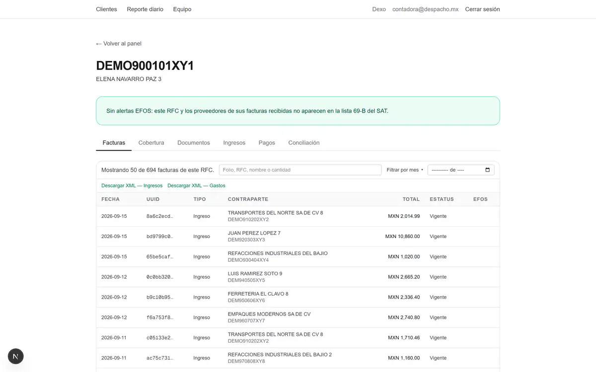

Qué quedó completo
XML y documentos disponibles, ordenados por RFC y mes.
Para despachos contables
Dexo trabaja durante la noche sobre los RFC de tu despacho. Por la mañana ves qué descargó, qué encontró y qué falta revisar.
Lo comprobable viene con evidencia. Lo que necesita una decisión queda para ti.
Acceso por invitación. No envíes RFC, e.firma, contraseñas ni archivos de clientes.
Esta mañana
12 RFC listos para revisarDatos de muestra
Entrar al portal. Bajar XML. Buscar la constancia. Revisar complementos. Abrir el Excel. Repetirlo con el siguiente cliente.
Mientras el despacho no está conectado
Dexo no es otra bandeja que alguien tiene que operar. Deja el trabajo previo ordenado para que el equipo entre directo a revisar.
XML y documentos disponibles, ordenados por RFC y mes.
El faltante queda visible y dice con qué se detectó. No se disfraza de resultado correcto.
Diferencias, pagos o movimientos donde hace falta una decisión del contador.
Dexo prepara. Tu despacho revisa y decide.
Conciliación con datos de muestra
No es una franja de totales. Es el recorrido completo: movimientos, cruces, evidencia, excepciones y decisiones.
Julio 2026 · BANBAJÍO ••0201
La compatibilidad depende del banco y se confirma antes de activar la conciliación.
Antes de abrir el Excel



Pantallas con datos de demostración.
Empieza acotado
Primero revisamos la parte del proceso que más pesa, los bancos relevantes y qué resultado puede comprobarse con seguridad.
Creas tu contraseña y el espacio del despacho.
Los datos sensibles se cargan dentro del flujo controlado, nunca por mensaje.
Si hace sentido, amplías el uso. Si no, lo sabes antes de mover al resto.
Preguntas antes de probar
No. Dexo prepara y muestra evidencia. Los casos que requieren interpretación o una decisión se quedan para el contador.
No. La revisión empieza con el proceso que más pesa y un RFC que permita comprobar el resultado.
No. Nunca la envíes por mensaje ni en este formulario. Si se aprueba el acceso, la puesta en marcha ocurre dentro del flujo controlado de Dexo.
No se promete de forma general. Confirmamos banco y formato antes de incluirla en la prueba.
No. Quita trabajo repetitivo y deja al contador la revisión y la decisión.
Revisión privada
Cuéntanos cómo trabaja tu despacho. Revisamos si Dexo puede mostrarte un resultado útil sin cambiar todo tu proceso.
Solicitud recibida
Revisaremos lo que compartiste y te contactaremos para confirmar si Dexo encaja con tu operación.